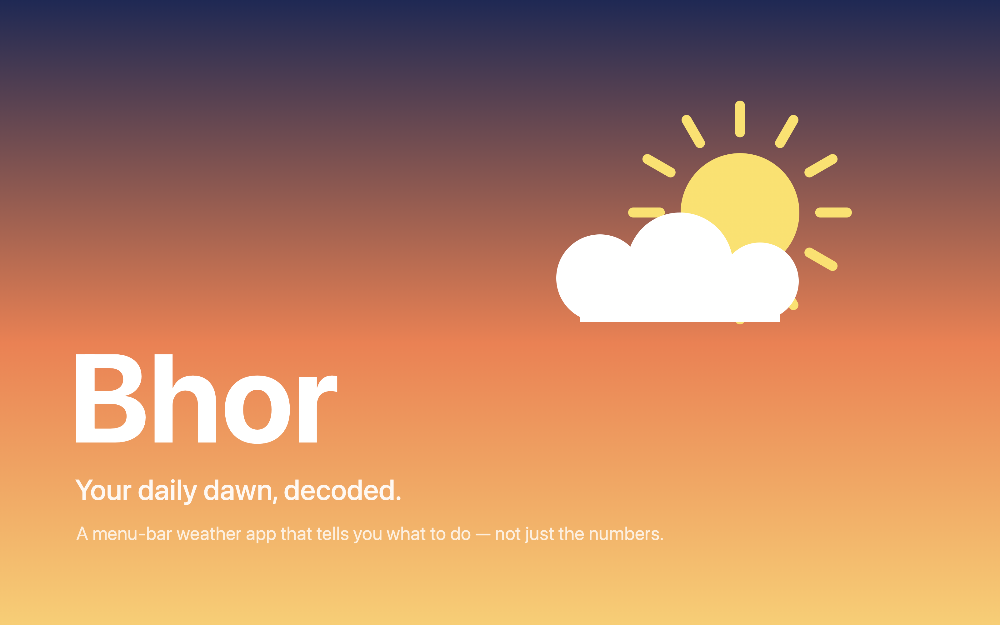
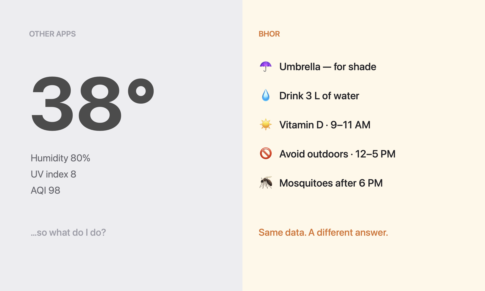
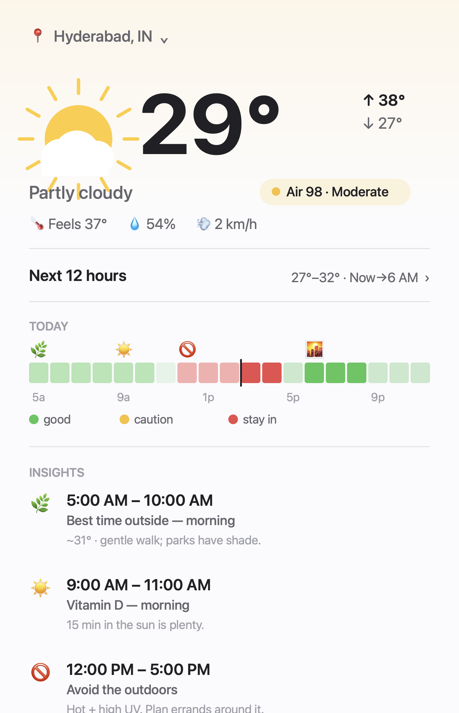
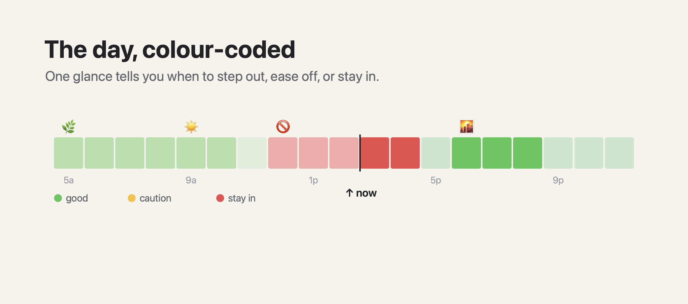

Bhor: Weather, Decoded
A menu-bar weather app that tells you what to do, not just the numbers. Your daily dawn, decoded.

Bhor, your daily dawn, decodedMost weather apps hand you numbers and walk away. UV index 8. Humidity 80%. AQI 98. Fine, but what am I supposed to do with that?
Apple Weather says it's 38°. Bhor says: take an umbrella for shade, drink 3L of water, step out 9–11 AM for Vitamin D, avoid the outdoors 12–5, and watch for mosquitoes after 6 PM. Same data, different output. The difference is interpretation.
Bhor's whole idea is to never show a number without telling you what it means for your day. It reads live weather and air quality and turns it into a short list of plain-language "do this" cards, placed on a timeline of your day.

Same data, a different answer
The Bhor popover, the day's actions at a glanceThe "brain" is a small rule engine. Each insight is a documented rule with a real threshold, e.g. Vitamin D fires when UV is in the safe synthesis band (3–8) and it isn't an "avoid outdoors" hour. The honesty matters: the rules are based on public-health and meteorological guidance, not vibes.
Data comes from free, no-key APIs (Open-Meteo for weather and air quality), so the app stays free forever and sends nothing personal anywhere.

The day, colour-coded, green good, yellow caution, red stay inWhat's working. The interpretation layer is the whole point, and it lands, reading "step out before the heat" beats reading "UV 8" every time. A single menu-bar glance fits the habit better than opening an app.
Want to try it?
There's a working macOS build (DMG) I'm sharing for feedback. I can walk through the idea, the rule engine, and what I learned building it.
hola@iamsatz.me